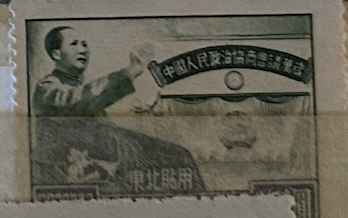
| SOURCE | TITLE| IMAGE MATCH | click to source page |
| HipStamp | People's Republic of China 1950 Sc 1L139 Mao Conference Hall Green Stamp MNH | Asia - China, General Issue Stamp / HipStamp | 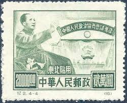 |
| eBay | China Stamp 1950 C2 Commemorating CPPCC (Original Printing?) MNH | eBay | 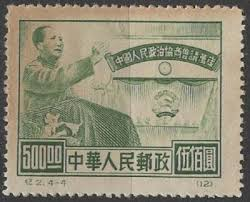 |
| Find Your Stamps Value | Chinese People's Consultative Political Conference: Mao Tse-tung on Rostrum - 中国人民政治协商协商会议纪念: 毛泽东在讲台上$500 Green stamp price, value | 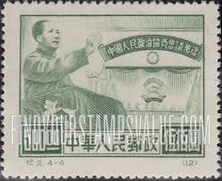 |
| Stamp Community Forum | China: How To Identify Originals/Reprints C2 People's Political Conference - Stamp Community Forum | 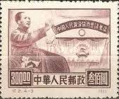 |
| World Stamps Project | People's Republic of China – varieties of postage stamps – World Stamps Project | 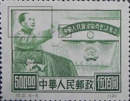 |
| Colnect | China, People's Republic : Stamps [Year: 1950] [1/11] : Colnect 📮 | 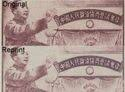 |
| eBay | 1950 P.R.China, People's Consultative Political Conference, Original, MNH,#8-11. | eBay | 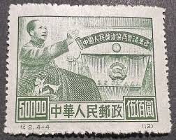 |
| eBay | 1865 Year World Paper Money for sale | eBay | 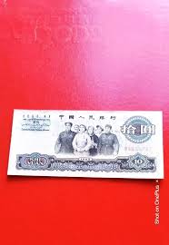 |
| eBay | CHINA P879A 1965 10 YUAN PMG 66 EPQ WITH WATER MARK ; GREAT HALL 22 PCS | eBay | 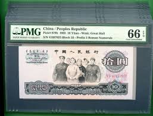 |
| eBay | PMG 1965 Chinese Paper Money for sale | eBay | 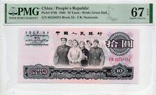 |
| eBay | 1865 Year Banknote World Paper Money for sale | eBay | 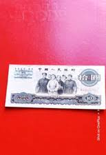 |
| eBay | Uncirculated PMG Grade 66 World Paper Money for sale | eBay | 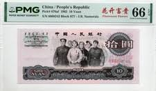 |
| WorthPoint | china stamp "Stalin greets Mao Tse-Tung" dated 1950 | #248995051 | 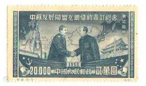 |
| eBay | China 10 Yuan 1965 Crisp Nice Condition | eBay | 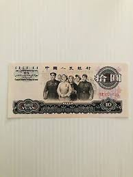 |
| eBay | CHINA P872A 1956 5 YUAN PCGS 53 WITH STARS & WINGS RARE NOTE | eBay | 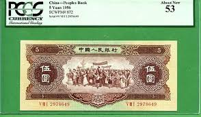 |
| eBay | Jordan 500 Fils 1949 P 1a Sign.# 1 Kg. Abdullah I Scarce Circulated Banknote | eBay | 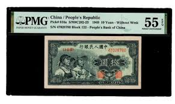 |
| Planet Banknote | 1965 China 10 Yuan 2-Note Set: PMG 64 Choice UNC & PMG 66 Gem UNC, | 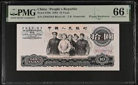 |
| VCoins | Banknote, China, 250,000 Customs Gold Units, 1947, KM:374, UNC(63) | 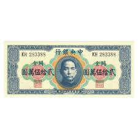 |
| | Katz Auction | China 50 Yuan 1990 | Katz Auction | 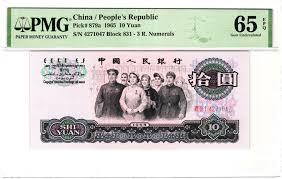 |
| Etsy | The Third Set is Rm 10 Yuan in 1965 - Etsy | 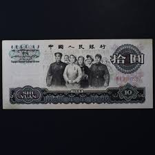 |
| Numista | Robert-Ralph Carmichael – Numista | 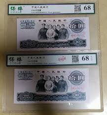 |
| eBay | 1965 Chinese Paper Money for sale | eBay | 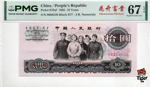 |
| eBay | Lot of 2 China 1965 10 yuan People's Republic Banknote GEM UNC {H53} | eBay | 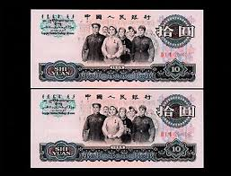 |
| eBay | 1972 Chinese Paper Money for sale | eBay | 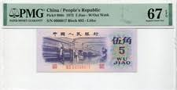 |
| eBay | Lot of 2 China 1965 10 yuan People's Republic Banknote GEM UNC {H59} | eBay | 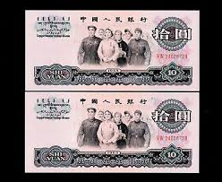 |
| eBay | Circulated 1990 Chinese Paper Money for sale | eBay | 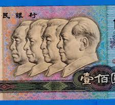 |
| eBay | CHINA. 10 Yuan 1965. 879b. | eBay | 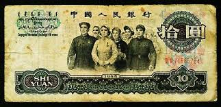 |
| PicClick | China 1962 Jiao FOR SALE! - PicClick | 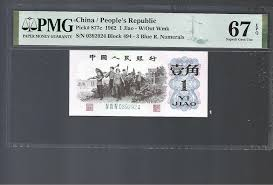 |
| Greysheet | People's Bank of China 行銀民人國中 5 yuan B4092a,P876 1960 No sig Series I IV, VIII VI II Intro 20 10 1969 PBC 23a Pricing Guide | The Greysheet | 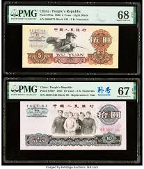 |
| eBay | 1936 10 YUAN CHINA, CENTRAL BANK OF CHINA PICK# 214a PMG 55 ABOUT UNC | eBay | 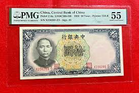 |
| ALEADO.COM | rare beautiful goods old note China note China person . Bank star ... China Bank 1953 year ~1979 year together 22 sheets old note old note old coin old . old .*: Real Yahoo auction salling | 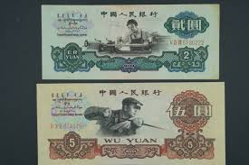 |
| eBay | 1965 10 YUAN CHINA BANKNOTE - NICE WORLD CURRENCY !!! | eBay | 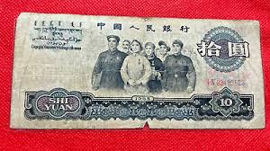 |
| MA-Shops | China 10 Yüan 1965 P. 879 a UNC | MA-Shops | 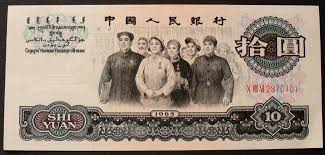 |
| eBay | China Paper RMB Third Rmb Set 10PCS PMG 67 Collection Same Number Tail 560 | eBay | 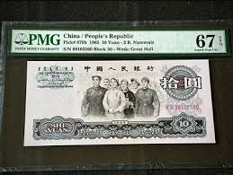 |
| eBay | 1960 Banknote Chinese Paper Money for sale | eBay | 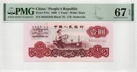 |
| eBay | 1965 China paper money 10 yuan 3 | eBay | 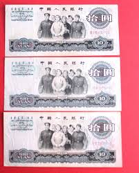 |
| eBay | Certified China 5 Yuan Banknote 1937 Chinese Currency PMG Paper Money Crisp CU | eBay | 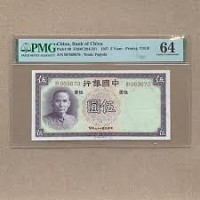 |
| eBay | 1965 China 10yuan PMG P-879b 67EPQ Wmk: Great Hall S/N 07107282 2.R .Numerals . | eBay | 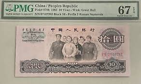 |
| Numiz Numizmatika | 1 jiao 1962 | 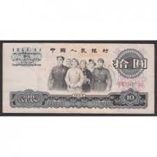 |
| eBay | Bahamas 1/2 Dollar 2001 World Paper Money UNC Currency | eBay | 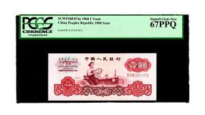 |
| HipStamp | China -1964-Album of the Third SET of Renminbi ALL Last 3 Serial Numbers -Same | Asia - China, Stamp / HipStamp | 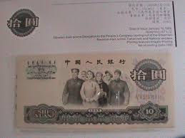 |
| VCoins | Banknote, China, 2 Yüan, 1960, 1960, KM:875a, VF(20-25) | World Paper Money | 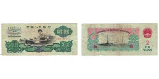 |
| eBay | Mazuma *F2198 China 1965 10 Shi Yuan VIII I 10559037 VF | eBay | 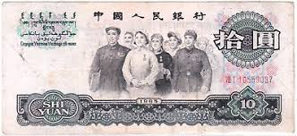 |
| eBay | 1937 Year Banknote Chinese Paper Money for sale | eBay | 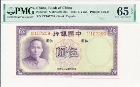 |
| eBay | 3 Note: China 1953 1962 Bank Notes 1 2 5 cent 1Jiao 3 PCS UNC {173} | eBay | 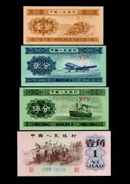 |
| eBay | 1937 Year Chinese Paper Money for sale | eBay | 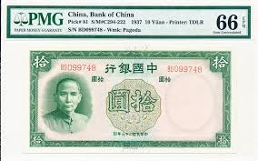 |
| eBay | 1936 1 Yuan China Central Bank of China Pick #212c PMG 66 EPQ | eBay | 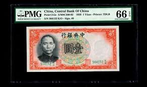 |
| eBay | 1930 China 5 Yuan Central Bank 3 Pieces Pick-213a XF 三张民国19年中央银行5元| eBay | 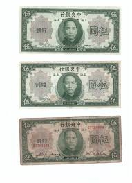 |
| eBay | China 1965 10yuan PMG P-879b 64 S/N 68338533 Block 45-Prefix 2 Roman Numerals. | eBay | 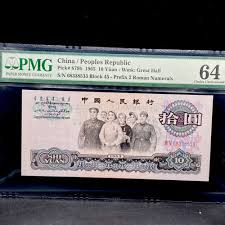 |
| YouTube | 중국 1965년 5위안 보충권 {China 1965 5 yuan Supplementary Right} - YouTube | |
| eBay | 1960 CHINA PEOPLE'S REPUBLIC 1 YUAN PMG 67 EPQ SUPERB GEM UNC | eBay | |
| eBay | China 10 Yuan 1937 P81 Uncirculated Grade 63 | eBay | |
| eBay | CHINA BANK OF CHINA $10 YUAN P.81 FROM 1937 ((PMG) 58 EPQ | eBay | |
| eBay | China PRC 10 Yuan 3 & 2 Roman P/N Lot, 1965, P 879a 879b, F | eBay | |
| eBay | 5)Five - 1936 CHINA 1 YUAN CENTRAL BANK OF CHINA Pick 216a - Crisp Uncirculated | eBay | |
| eBay | 1937 10Yuan China Bank of China PMG GEM 66 EPQ | eBay | |
| Etsy | Stunning Bank of China Five Yuan Banknote 1937! - Etsy Israel | |
| BANK NOTE MUSEUM | P-879 | |
| PICRYL | 24 Thomas de la rue Images: PICRYL - Public Domain Media Search Engine Public Domain Search |